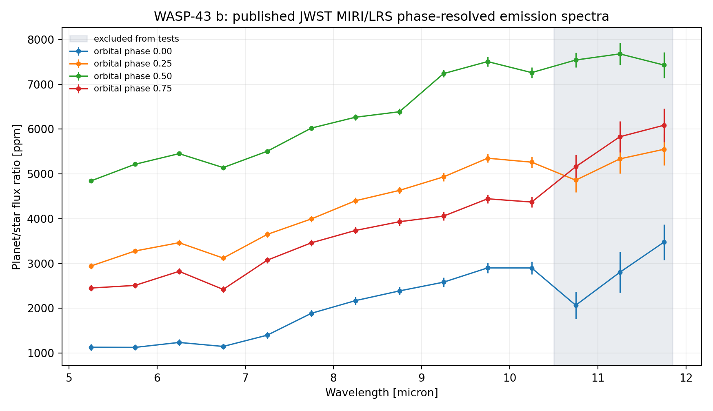
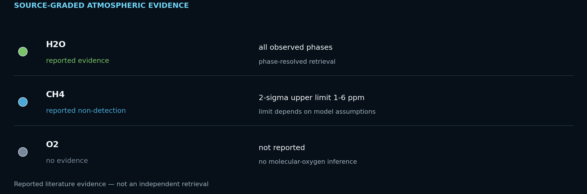

Data source notes
SHA-256, LF-normalised text
4df29eb74b34f3af1a266f084f7fbe059ac36bc79dfa748b352c63fd88e5b5ebBrowse 15 versioned evidence files. Table previews simply display stored rows. Consult the project report for the source, processing steps, and inference assumptions.


4df29eb74b34f3af1a266f084f7fbe059ac36bc79dfa748b352c63fd88e5b5eb| species | status | evidence | basis | source_label | source_url |
|---|---|---|---|---|---|
| H2O | reported evidence | all observed phases | phase-resolved retrieval | Bell et al. 2024, Nature Astronomy | https://doi.org/10.1038/s41550-024-02230-x |
| CH4 | reported non-detection | 2-sigma upper limit 1-6 ppm | limit depends on model assumptions | Bell et al. 2024, Nature Astronomy | https://doi.org/10.1038/s41550-024-02230-x |
| O2 | no evidence | not reported | no molecular-oxygen inference | Bell et al. 2024, Nature Astronomy | https://doi.org/10.1038/s41550-024-02230-x |
b66b70fed6161fa1348d3f058b879020c15c12ad9580606668a4379c839211ac| pl_name | hostname | ra | dec | pl_orbper | pl_tranmid | pl_trandur |
|---|---|---|---|---|---|---|
| WASP-43 b | WASP-43 | 154.9081869 | -9.8064431 | 0.813475 | 2455528.86774 | 1.1592 |
a551415805cc8af9d6faa60ba8ec8d40384cba594d9f6376b02a404751ac055824e025d8efb700db1b83981d7d40d5145b116f06f3b387822e2f4af1fe136374| record_doi | archive_name | archive_md5 | archive_entry | local_path | size_bytes | entry_md5 |
|---|---|---|---|---|---|---|
| 10.5281/zenodo.10525170 | WASP43b_MIRI_Data.zip | d14c633b7cdc15a9c990a92cc4fc9b86 | WASP43b_MIRI_Data/2_Planetary_Spectra/fiducial_combined.h5 | data/spectra/fiducial_combined.h5 | 9674 | 3c0de266fee1fccc832d87954efa7ba0 |
| 10.5281/zenodo.10525170 | WASP43b_MIRI_Data.zip | d14c633b7cdc15a9c990a92cc4fc9b86 | WASP43b_MIRI_Data/2_Planetary_Spectra/eureka_v1.h5 | data/spectra/eureka_v1.h5 | 12431 | f4b242e27f21ca6c5377a2fa71926588 |
d74f59e54c190ec61ddebecd62c55d4be73822a905e59f4556421dcd179f5acd| quantity | value | interpretation |
|---|---|---|
| multiverse_designs | 180 | predeclared analysis combinations |
| offset_min_deg | -9.713831877189955 | negative means before eclipse |
| offset_median_deg | -8.823739742800502 | across all designs |
| offset_max_deg | -7.65797008681584 | negative means before eclipse |
ed60a750003b869e4a45561034132540a2ae391a9fb2bdc6ff3f844ffaa80866| quantity | value | unit |
|---|---|---|
| sector | 9 | TESS sector |
| period_days | 0.813475 | days; NASA Exoplanet Archive |
| published_duration_hours | 1.1592 | hours; NASA Exoplanet Archive |
| a_over_rstar | 5.08909066667 | fixed from saved a and stellar radius |
92319dfa6bc2f0998cec25448c1fce4a6e9b8d1a18fa29a92eb9deef3d5ee9b5| chi2 | comparison | dof | excluded_long_wavelength_bins | linear_chi2 | linear_dof | linear_p |
|---|---|---|---|---|---|---|
| 619.1990067892451 | phase 0.00 | 10 | 3 | 59.304155568030055 | 9 | 1.8252239061472428e-09 |
| 1168.9268195358206 | phase 0.25 | 10 | 3 | 96.34100143993734 | 9 | 8.628605241836405e-17 |
| 1634.1443267258153 | phase 0.50 | 10 | 3 | 179.40123650988613 | 9 | 6.756807464055371e-34 |
| 896.0281188812085 | phase 0.75 | 10 | 3 | 73.84737215464656 | 9 | 2.6677423435047188e-12 |
e0741885ffceeeb8e8c14be1a4597776ef3040b672c249ff96bca9097f0ed25a| quantity | value | unit |
|---|---|---|
| analysis_band_min | 5.25 | micron |
| analysis_band_max | 10.25 | micron; bins above 10.5 excluded |
| substellar_irradiation_temperature | 1950.43981172 | K; saved stellar parameters |
| fiducial_nightside_brightness_temperature | 889.647972583 | K; blackbody-star approximation |
951cc83653fa9f032ca904c3832c56b50fcb9ef451e320782f6d207cf3be4b76| sector | filename | transit_events | n_points | transit_supported | delta_bic | timing_shift_hours |
|---|---|---|---|---|---|---|
| 9 | tess2019058134432-s0009-0000000036734222-0139-s_lc.fits | 26 | 5396 | True | 104325.8731 | -0.0614324805 |
a865dfc68cb2273f3bbae17f5851da5e35e397fc65344d7ca770e6f15ecb8563| reduction | phase | wavelength_micron | planet_star_flux_ppm | flux_error_ppm | blackbody_star_brightness_temperature_k | temperature_error_k |
|---|---|---|---|---|---|---|
| fiducial | 0.0 | 5.25 | 1131.6342873365106 | 71.43728647951232 | 909.8216501472144 | 18.138417330488437 |
| fiducial | 0.0 | 5.75 | 1127.79956734175 | 62.33412043106349 | 862.5573250054867 | 15.536095339146016 |
| fiducial | 0.0 | 6.25 | 1238.6010753237497 | 77.32329065808874 | 849.0695880158663 | 18.258774809978945 |
| fiducial | 0.0 | 6.75 | 1148.9118477070876 | 64.5873554628003 | 792.3891734643751 | 15.44070564494666 |
5a67f266349e8bd2f770be633766c5682218e09d8bb41062d3e45c4abd82695829cefd9e13cb8430e46c9741670152c73cb616770564421d52f4cf80c24e75ea8d852881b1c038f0636da9ce91cfc8b013d47c1737b797b564bd7d0d01dcfb9e9a173eca1f954bb3ac235012f1e54eeff0b58edbac0da16f8b4d1e78cd55771781ad7da7a62e02be5596682ea09f217062f391cfd5e53a8b3ff9bb1c8729505fSHA-256 values verify the stored files. They do not independently validate the scientific analysis. Rebuild this page with python scripts/evidence_catalog.py followed by python scripts/render_evidence_page.py.